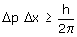
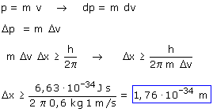

a) Relación de Heisemberg:
 Una imprecisión en la velocidad implica una imprecisión en el momento lineal. La relación entre las imprecisiones Δp, Δv es la misma que hay entre dp, dv, entonces resulta:  La imprecisión en la posición es mucho menor que el tamaño que la bola, es decir: en la práctica se conoce perfectamente la posición de la bola |